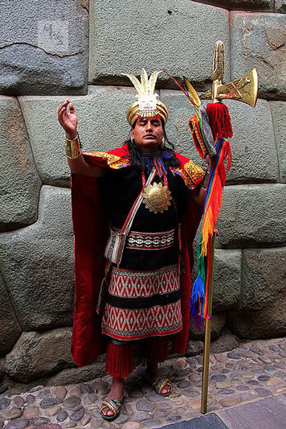
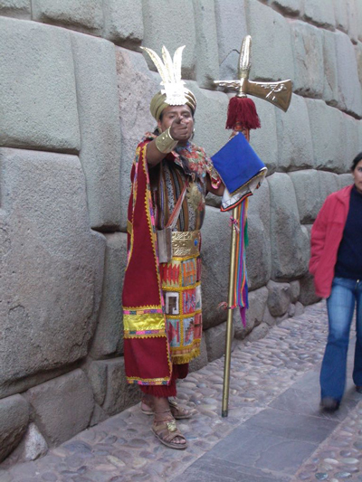
Cuzco (often spelled Cusco) was the historic capital of the Inca Empire from the 13th until the 16th-century Spanish conquest. In 1983 Cuzco was declared a World Heritage Site by UNESCO. The indigenous name of this city is Qusqu. The word is derived from the phrase qusqu wanka ('Rock of the owl'), related to the city's foundation myth of the Ayar Siblings.
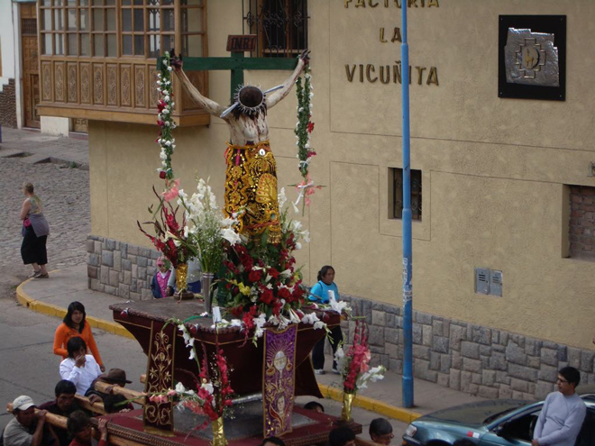
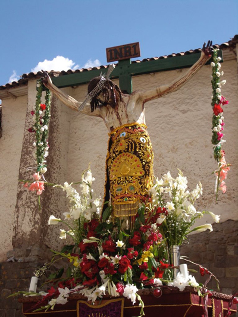
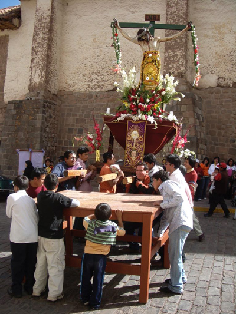
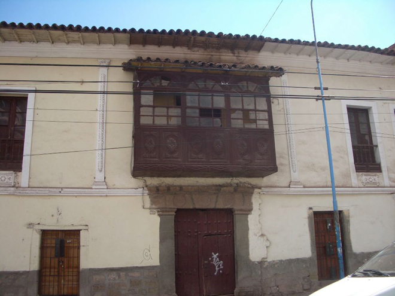
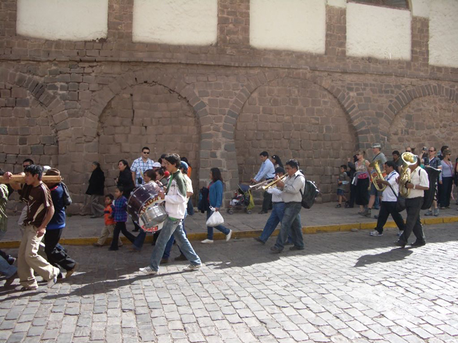
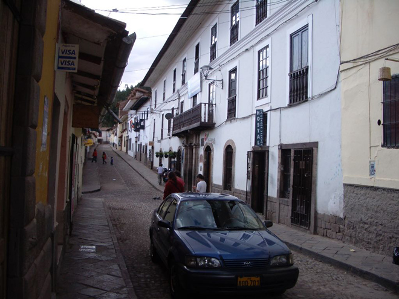
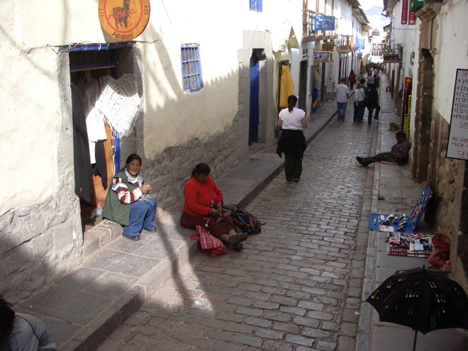
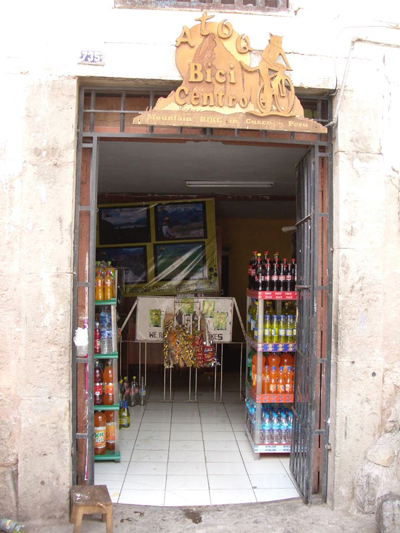
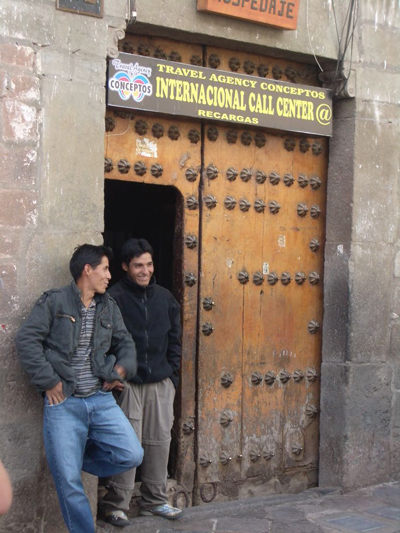
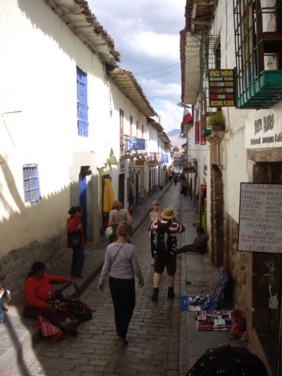
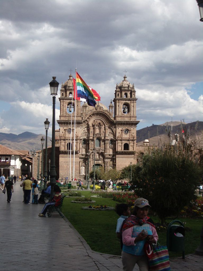
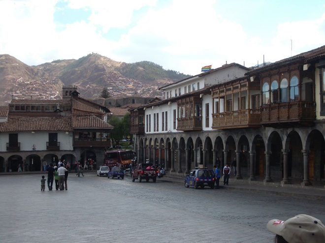
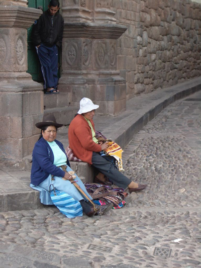
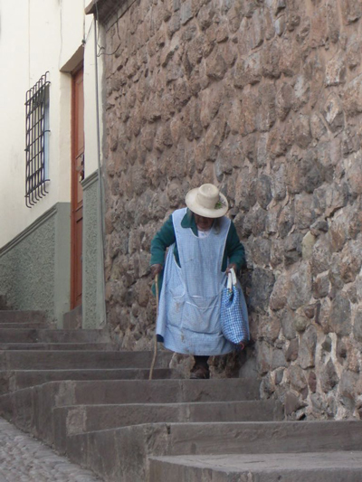
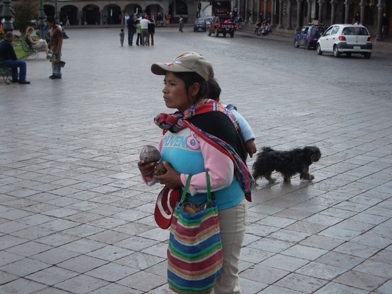
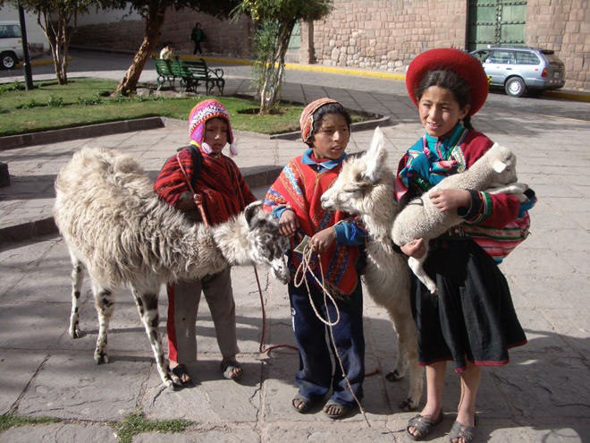
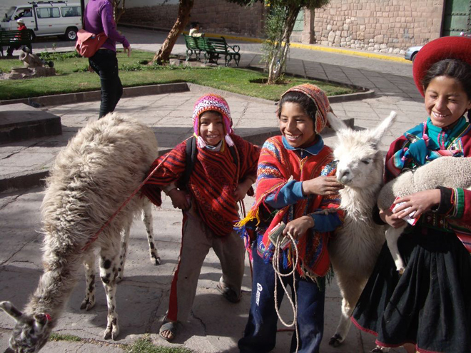
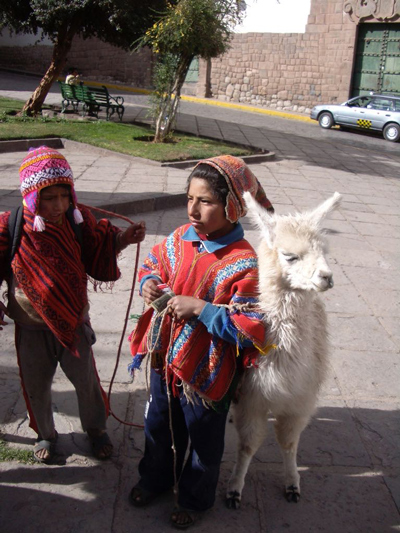
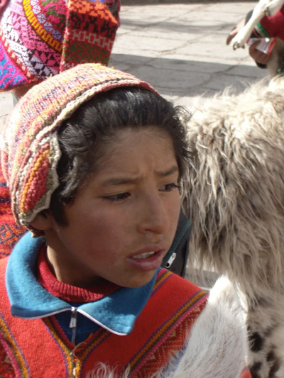
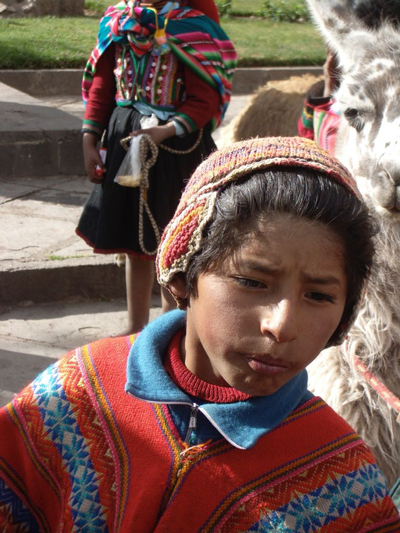
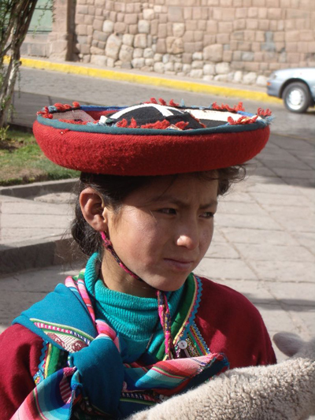
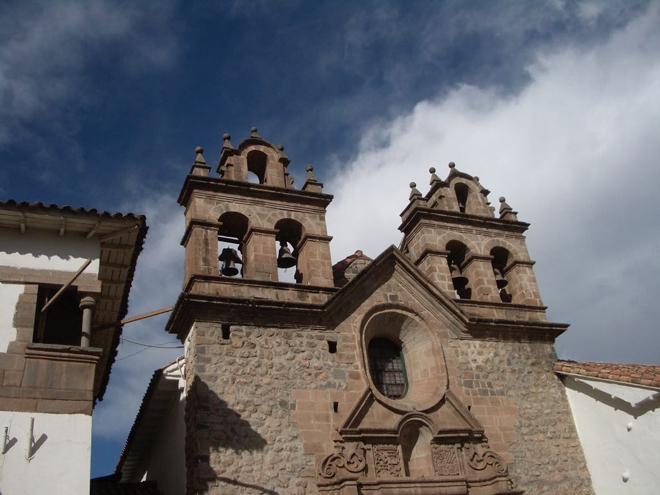
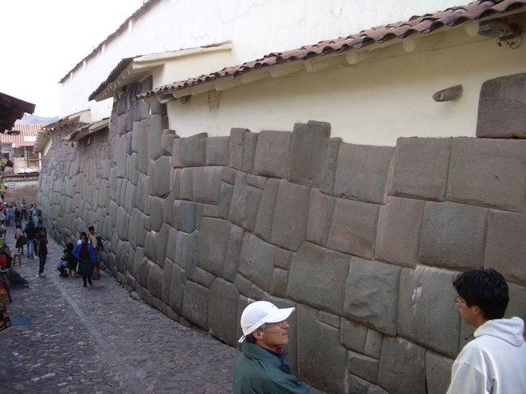
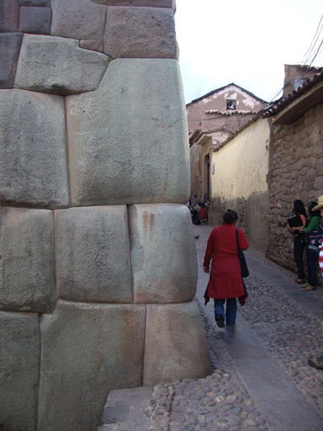
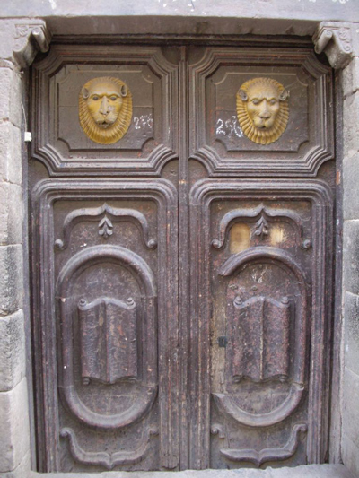
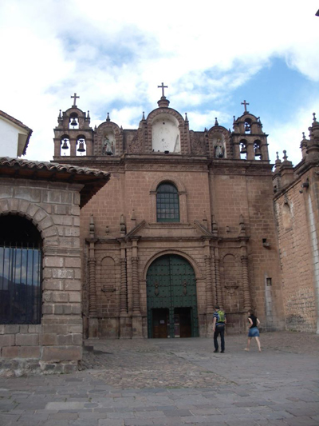
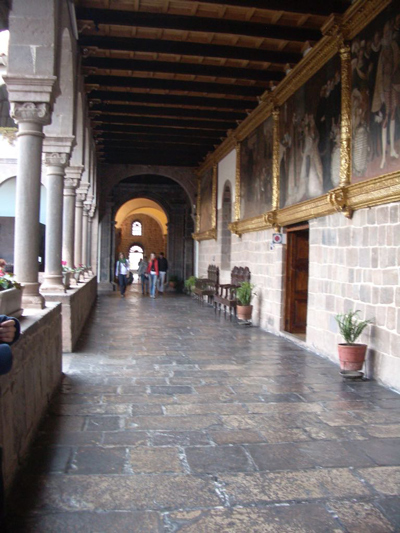
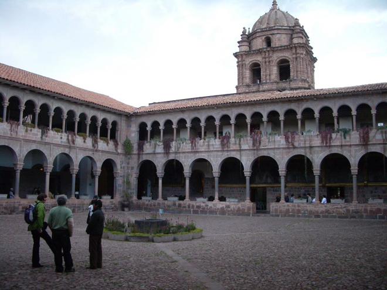
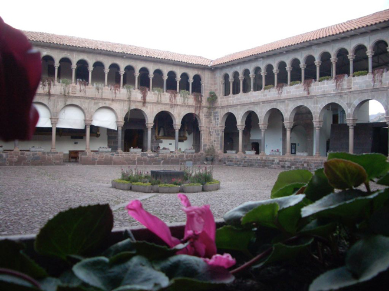
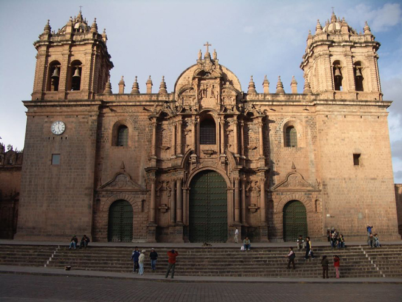
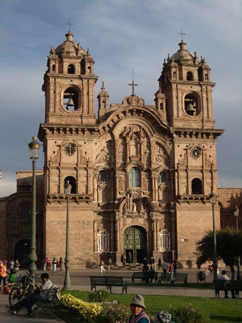
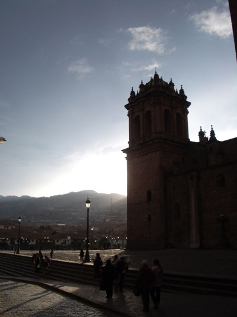
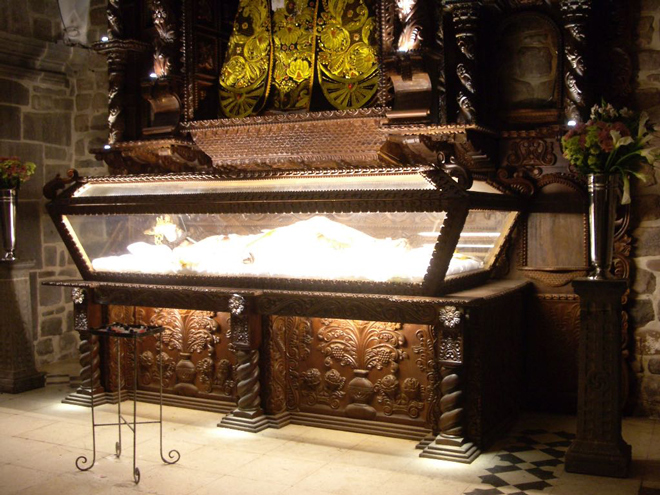
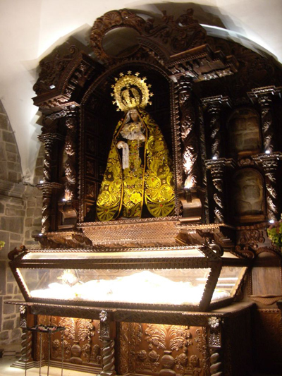
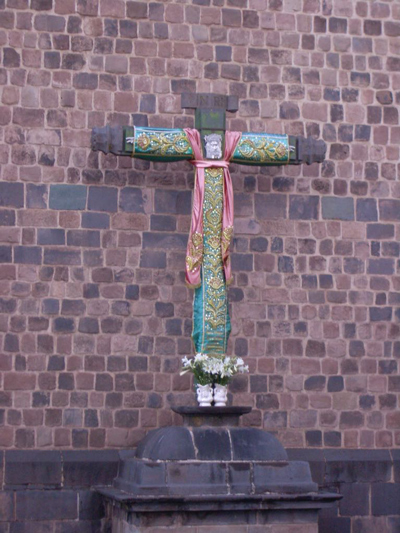
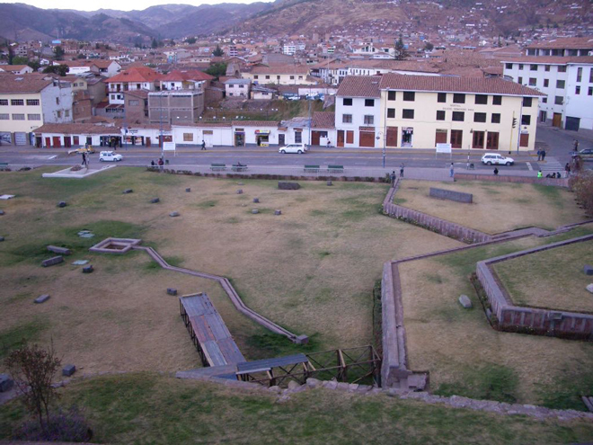